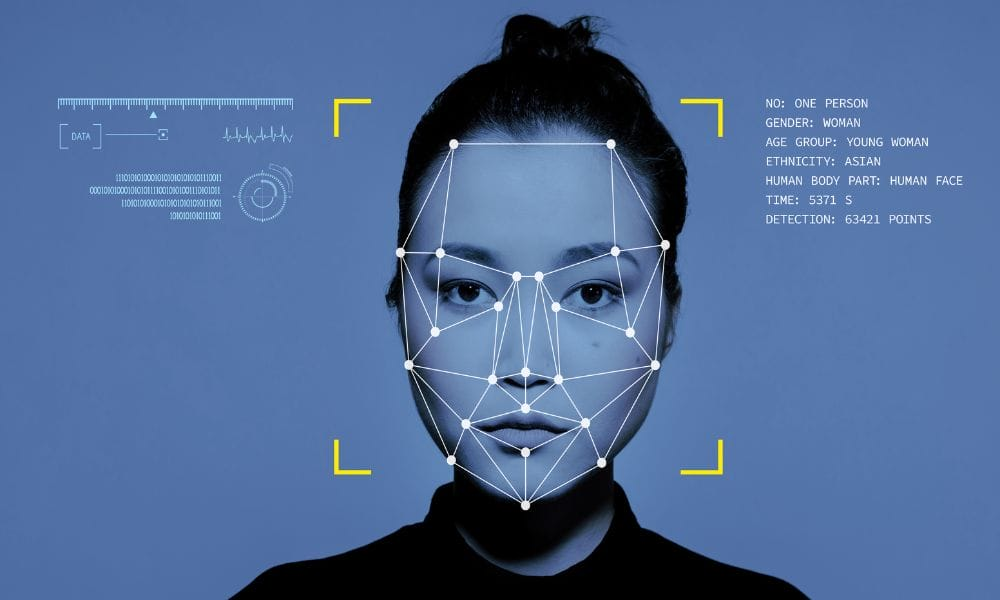

Reconocimiento de Imágenes
El machine learning supervisado se usa en aplicaciones como reconocimiento facial, diagnóstico médico por imágenes y seguridad biométrica.

Predicción de Fraude
Los algoritmos supervisados ayudan a detectar fraudes en transacciones bancarias y compras en línea analizando patrones de comportamiento sospechosos.
Asistentes Virtuales
Los asistentes como Siri y Alexa utilizan modelos supervisados para entender y responder preguntas de los usuarios de manera eficiente.

Diagnóstico Médico
El machine learning supervisado se usa en la detección de enfermedades a partir de datos clínicos y exámenes médicos, mejorando la precisión de los diagnósticos.